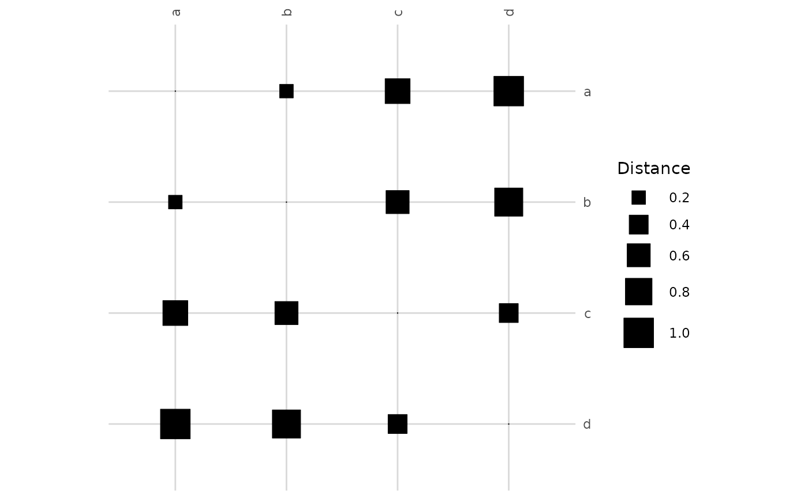

Creates a compact visualization of the pairwise distances or dissimilarities between subunits, given as a three-column table as for the indices. They are drawn as a symmetric matrix where each cell is a square whose area is proportional to the distance.
Usage
visualize_dist(
diss,
ids = NULL,
labels = NULL,
clabel.row = 1,
clabel.col = 1,
csize = 1,
clegend = 1,
grid = TRUE
)Arguments
- diss
Data frame with three columns (taken by position): the identifiers of two subunits and the distance between them, in either orientation. Only in-memory tables are accepted.
- ids
Optional vector with the identifiers of the subunits to show, in the order they are drawn. If
NULL(default), every identifier in the first two columns ofdiss, in order of first appearance. Rows with other identifiers are ignored.- labels
Optional character vector with one label per subunit (in the order of
ids). IfNULL(default), the identifiers are used.- clabel.row
Numeric multiplier for the relative size of y-axis text.
- clabel.col
Numeric multiplier for the relative size of x-axis text.
- csize
Numeric multiplier controlling the maximum symbol (tile) size.
- clegend
If greater than 0, a size legend is shown; otherwise the legend is hidden.
- grid
Logical; whether to draw a light grid behind the tiles.
Details
The distance of a subunit to itself is 0, and pairs not listed in diss are left
blank. Values are visualized by magnitude; larger values produce larger squares. The first
subunit is displayed at the top. diss is validated as for the indices (numeric, finite,
non-negative distances, and a pair listed again only with the same distance). Requires the
ggplot2 package.
Examples
diss <- data.frame(
ID1 = c("a", "a", "a", "b", "b", "c"),
ID2 = c("b", "c", "d", "c", "d", "d"),
Distance = c(0.2, 0.7, 1.0, 0.6, 0.9, 0.4)
)
visualize_dist(diss)
